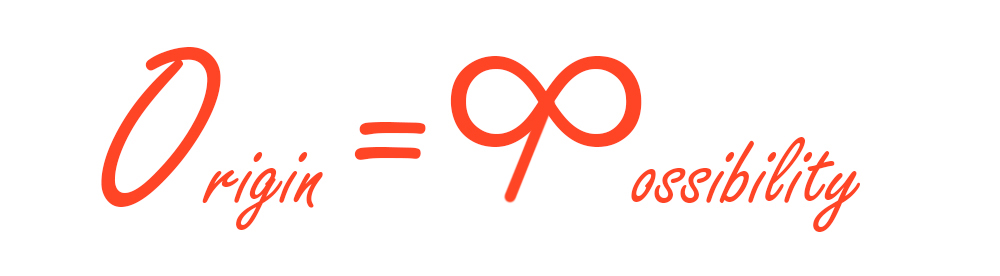
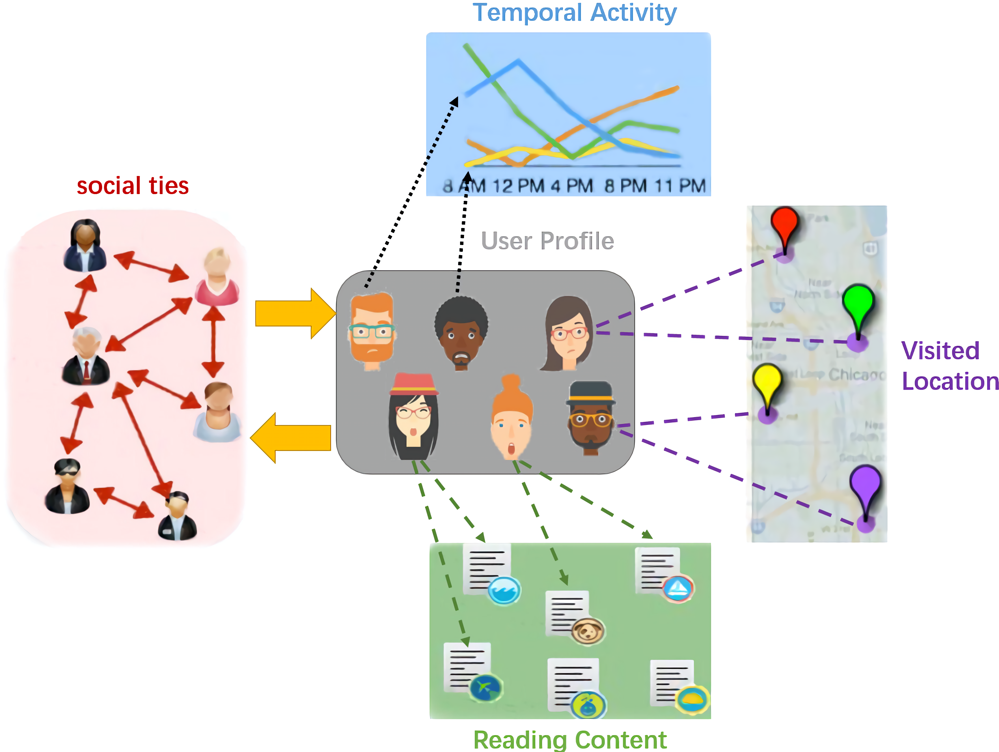
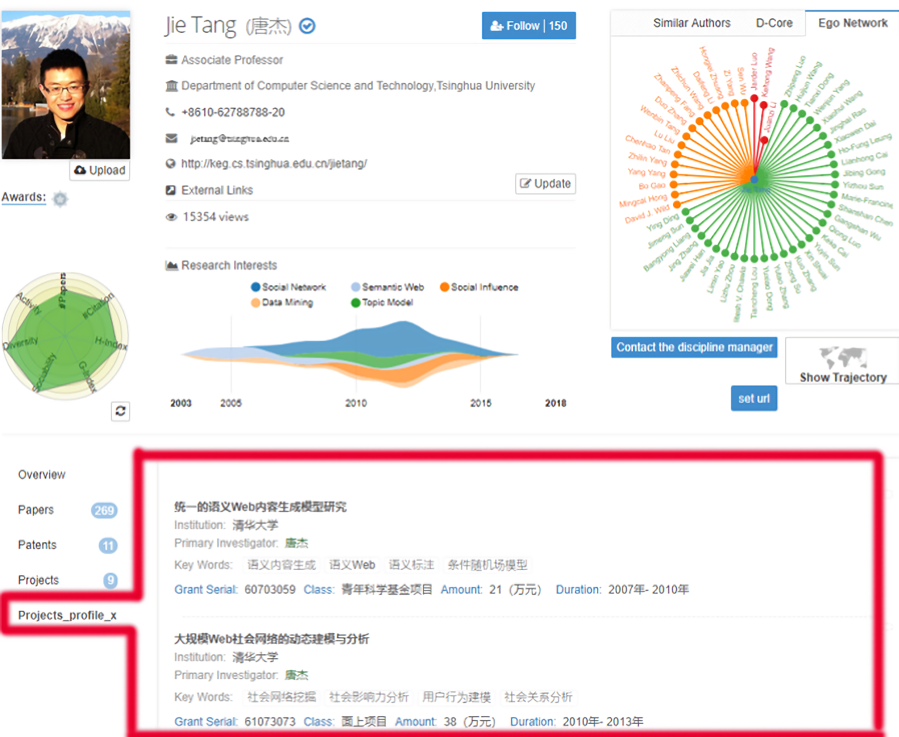
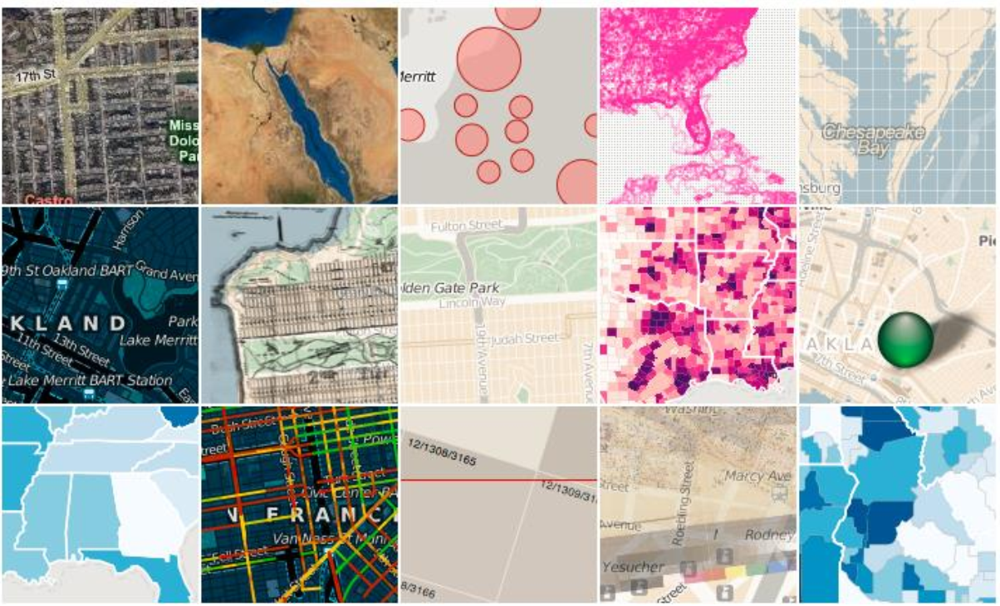
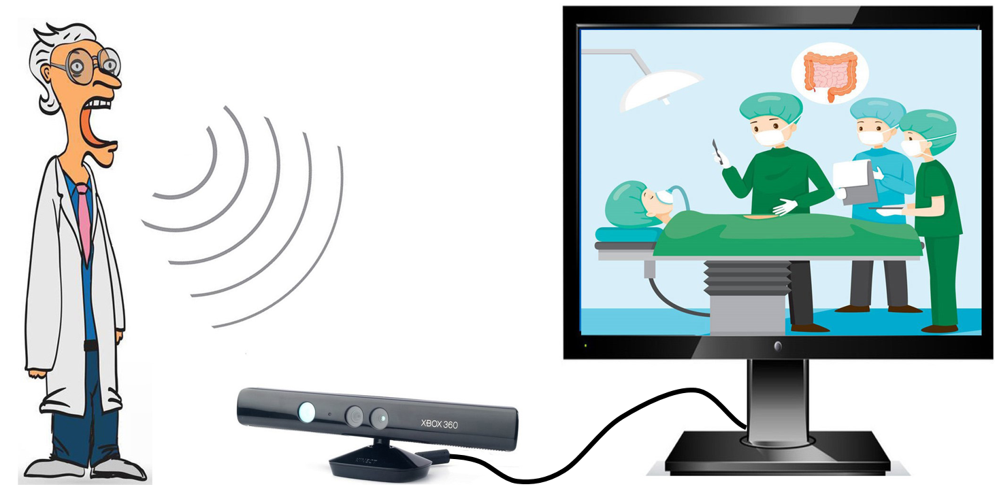

Computer Science Department, Central South University (17th in China, 985 & 211)
|
|

Xi Chen 陈熙
Computer Science Department, Central South University (17th in China, 985 & 211) |
|
Welcome to my homepage, friends! During college, I put efforts in mining a variety of network and designing interactive applications for context,
across traffic, society, body area, and e-healthcare. As first author or second author, I publish three papers on SCI journals.
I received research training from a MIT alumni. Our survey on data visualization can be accessed here.
Later I joined Knowledge Engineering Group at Tsinghua University(KEG), where I am luckily advised by
Jie Tang.
I also served as the member of an advanced science platform -- Arnetminer.
My current research interests are in social computing, ubiquitous computing, and data mining.

|
> Publications
> Selected Honors and Awards
Nomination for Chinese Exceptional Student (highest honor, 1/6500 ISchool undergrads and grads), 2018.
Best Defense for ISchool Representative Student (1/4320 undergrads), 2017.
Huawei Scholarship (2/4320)，2017.
> Project Experience
1. Duration: 2017.8-2018.12
Project Manager: Knowledge Engineering Group, Tsinghua University, China
|  | ① Modeled personalized dynamics of social network and opinion, and predicted evolution. | |||
|  | ② Adaptively collected heterogeneous funding and matched to scholars with decision tree (Aminer Online). | |||
 |
③ Predicted technology evolution with genetically clustering. [Code] |
2. Duration: 2017.3-2017.5
Project Manager: Department of Cyberspace Security, Hunan University, China
|  | ① Investigated data visualization field in terms of typical techniques, libraries, softwares, research progress, and open problems. [ Survey ] |
3. Duration: 2016.3-2017.7
Project Manager: Department of Computer Science, Central South University, China
| ① Devised robust and efficient communication for mobile body area network. [ Paper ] | ||||
| ② Devised epidemic routing for vehicular networks with taxi trajectory dataset from MSRA. [ Paper ] | ||||
| ③ Devised adaptive energy equilibrium for e-health network. [ Paper ] |
4. Duration: 2017.6-2017.7
Project Manager: Research and Development Department, Briup Technology corporation, China
 |
① Developed a smart traffic system on sand table as to route optimization, navigation guidance, driving laws, obstacle avoidance, and flow regulation (server, client, and hardware). |
5. Duration: 2015.7-2015.8
Project Manager: Digital Healthcare and 3D printing Research Center, Central South University, China
|  | ① Recognized Chinese speech of surgical terms with Kinect. ② Built GUI to Visualize objects and actions in voice-activated surgery simulation with DirectUI library. |
> Self-Evaluation
innately drived to explore association.
capable to think outside the box; spontaneously viewing things from funny and intuitive perspective; used to abstract logic.
curious about novel knowledge for resolving issues that are practical, interdisciplinary and challenging.
persistent and passionate; upon decided, will go all out to make things happen.
cherishing communication and team work, since I believe network essence is that union leads to strength.